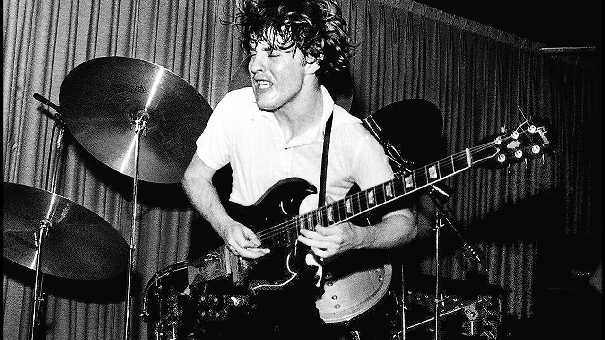
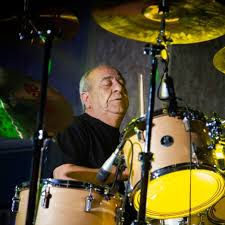

- T.N.T é o segundo álbum do AC/DC. Levou apenas três semanas para ser gravado e seu sucesso foi tamanho que a gravadora se interessou em lançá-lo no mercado internacional.
Após o sucesso do single "Baby, Please Don't Go" e do álbum - High Voltage, o AC/DC retornou ao Albert Studios em Sydney
para gravar seu segundo LP com os produtores George Young e Harry Vanda. - T.N.T.
marcou uma mudança na direção do álbum de estréia do AC/DC, - High Voltage, que foi lançado em ;
Enquanto High Voltage destaca algumas experiências com os estilos de suas canções e tinha uma variedade de pessoal enchendo várias funções, - T.N.T. viu a banda abraçar
plenamente a fórmula para que se tornaria famosa: Blues com base de Rock and Roll.
Eles também simplificaram seu sistema de pessoal e o usariam a partir de então, que era Angus tocando exclusivamente a Guitarra Solo,
Malcolm Young tocando Guitarra Base, e o baterista e o baixista sendo os únicos a tocar bateria e baixo respectivamente
nos álbuns.
Com a excelente aceitação do público, Malcolm Young e Bon Scott tiveram que convencer aos outros membros da banda de que seria melhor que se mudassem para a Inglaterra. Assim sendo, em eles estavam morando numa casa no subúrbio londrino de Barnes, onde apesar de pouco conforto, podiam tocar até altas horas e no volume que quisessem.
Levou pouquíssimo tempo desde a mudança até eles começarem a tocar nos mais famosos clubes de Londres, dos quais o que mais se destaca é o
Marquee Club (um templo do Rock que já foi palco de grandes bandas desde
Rolling Stones até o
Sepultura).
Na faixa de abertura, Bon Scott toca um solo de Gaita de Fole, instrumento o qual ele aprendeu a tocar na Escócia, quando jovem.
O álbum atingil certificação:
Nivel
Albuns Vendidos
5X Platina + Diamante
+ 900.000 (Austrália)
Platina + Ouro
+ 90.000 (México)
Duração do álbum: 41 min. 55 seg.
Gravadora(s):Albert Productions.
Produção: Harry Vanda e George Young.
Ronald Belford Scott ( — ) foi um cantor
e compositor australiano nascido na Escócia. Ele ficou mundialmente conhecido por ser vocalista e compositor da banda de Rock australiana AC/DC de a .
Em , a revista Hit Parader colocou Scott como o quinto melhor vocalista de Heavy Metal de todos os tempos.
Angus McKinnon Young () é um guitarrista e compositor, conhecido por ser guitarrista solo, compositor,
líder e co-fundador da banda AC/DC.
No ano de , foi introduzido juntamente com outros membros do AC/DC no Rock and Roll Hall of Fame. Foi considerado o 24.º melhor guitarrista de todos os tempos
pela revista norte-americana Rolling Stone.
Malcolm Mitchell Young ( — ) foi um
guitarrista e compositor escocês naturalizado australiano e fundador, junto com seu irmão mais novo Angus Young, do AC/DC, da qual era o guitarrista rítmico, vocalista de apoio e compositor.
Em 2014 Malcolm Young afastou-se da banda por estar sofrendo de demência. Morreu em , aos 64 anos.
 Rob Bailey é um ex-baixista do AC/DC. Ele juntou-se à banda em .
Bailey foi integrante da banda apenas durante a gravação de seu álbum de estreia - High Voltage e para vídeo Last Picture Show Theatre de "Can I Sit Next To You".
Após sua saída, o AC/DC não teve um baixista regular até a chegada de Mark Evans em .
 Tony Currenti é um baterista australiano mais conhecido como baterista de sessão do AC / DC (álbum de estreia de
High Voltage, e do single "High Voltage".
Depois de gravar o álbum, Currenti foi convidado a se juntar ao grupo, mas recusou por 2 motivos; 1 - Currenti era leal à sua banda atual Jackie Christian & Flight; e 2 - Ele era um cidadão italiano;
com um passaporte italiano que não permitia que ele viajasse livremente pela Inglaterra ou Europa com a banda.
George Redburn Young ( - ) foi um
músico, compositor e produtor musical australiano. Ele foi membro fundador das bandas
Easybeats e Flash and the Pan, e foi metade da dupla de compositores e produção Vanda & Young com seu colaborador musical de longa data Harry Vanda.
 Ronald Belford Scott ( — ) foi um cantor
e compositor australiano nascido na Escócia. Ele ficou mundialmente conhecido por ser vocalista e compositor da banda de
Ronald Belford Scott ( — ) foi um cantor
e compositor australiano nascido na Escócia. Ele ficou mundialmente conhecido por ser vocalista e compositor da banda de  Angus McKinnon Young () é um guitarrista e compositor, conhecido por ser guitarrista solo, compositor,
líder e co-fundador da banda AC/DC.
Angus McKinnon Young () é um guitarrista e compositor, conhecido por ser guitarrista solo, compositor,
líder e co-fundador da banda AC/DC.
 Malcolm Mitchell Young ( — ) foi um
guitarrista e compositor escocês naturalizado australiano e fundador, junto com seu irmão mais novo Angus Young, do AC/DC, da qual era o guitarrista rítmico, vocalista de apoio e compositor.
Malcolm Mitchell Young ( — ) foi um
guitarrista e compositor escocês naturalizado australiano e fundador, junto com seu irmão mais novo Angus Young, do AC/DC, da qual era o guitarrista rítmico, vocalista de apoio e compositor.
 George Redburn Young ( - ) foi um
músico, compositor e produtor musical australiano. Ele foi membro fundador das bandas
George Redburn Young ( - ) foi um
músico, compositor e produtor musical australiano. Ele foi membro fundador das bandas